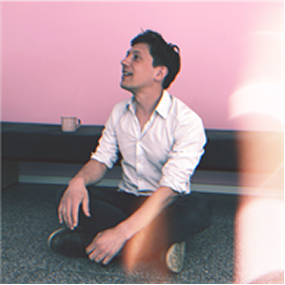

Hvem er vi?
Instant Ugen er et lille projekt, der drives af et par undervisere fra Multimediedesignuddannelsen på EK - Erhvervsakademi København.
Instant Ugen er et halvårligt projekt, hvor undervisere og studerende samarbejder om et digitalt design- og kommunikationsprojekt relateret til Instant Ugen-konkurrencen.
I bund og grund ønsker vi bare at promovere instant fotografering og have det sjovt, mens vi gør det.



Sponsorer
Instant Ugen er ikke relateret til nogen virksomheder inden for Instant foto-branchen.
Den eneste organisation, der støtter os, er EK - Erhvervsakademi København.
I hvert fald indtil videre.
Dommerne
Jonas Hasle (Adjunkt, Multimediedesign på EK)
Anders Dollerup (Lektor, Multimediedesign på EK)
Birgitte Heide (Lektor, Multimediedesign på EK)

Stefan Grage (Lektor, Multimediedesign på EK)
Studerende på Digital Design Valgfaget på Lektor, Multimediedesign på EK